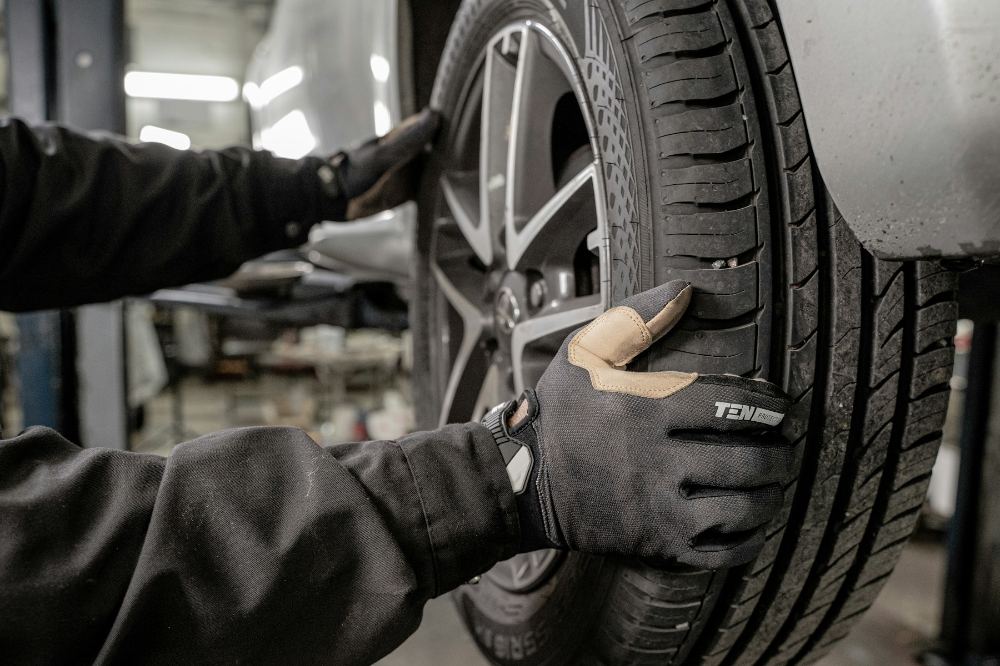
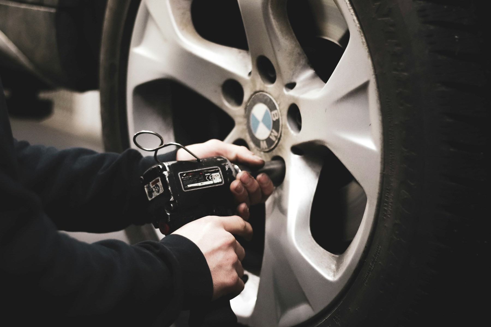

Condition review
The technician checks the relevant tyre, wheel and visible surrounding condition.
We measure wheel angles, compare readings with vehicle specifications and make appropriate adjustments where the vehicle allows.

The technician checks the relevant tyre, wheel and visible surrounding condition.
The appropriate equipment records the wheel, pressure or fitment information.
Adjustments, fitment, repair or filling are completed within the confirmed scope.
The result is reviewed and practical follow-up advice is shared.

Depending on the selected service, this may include wheel-angle sensors, a wheel balancer, tyre changer, pressure gauge, inflation equipment or puncture-inspection tools.
They do not replace checking the tyre's condition or considering vehicle-specific adjustment limits.
Visible tread, sidewall and pressure condition before replacement or repair advice.
Request inspectionAssembly-weight correction for vibration that appears at road speed.
See balancingCorrect fitment, inflation and wheel installation for a selected tyre.
See fittingNo. Pulling, vibration or pressure loss can have more than one cause. An in-person inspection and relevant measurement are the useful next steps.
Reduce speed and stop somewhere safe if the vehicle feels unsafe, a tyre is losing pressure or there is visible damage. Arrange an inspection before continuing.
No. Describe what you notice and when it occurs. The workshop can inspect first and confirm whether alignment, balancing, repair or another check is appropriate.
No. Repairability depends on the puncture location, size, tyre construction and overall condition. Sidewall damage generally needs different guidance.
The condition check establishes the suitable work and any materials required. The workshop should confirm that scope and price before proceeding.
Choose a preferred appointment window and add your tyre size if you know it.